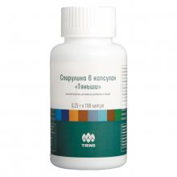
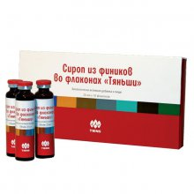
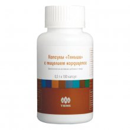
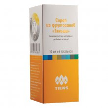
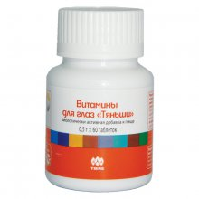
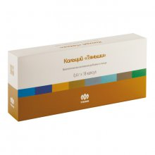
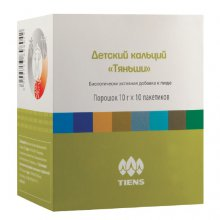
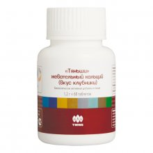
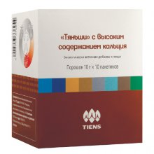

|

Спирулина в капсулах «Тяньши»Спирулина – это сине-зеленая водоросль, богатая белком и бета-каротином. Она также содержит тщательносбалансированный самой природой набор витаминов группы В и ряд важных для организма микроэлементов и амино кислот. Рекомендована для: Функции: Состав: спирулина, желатин, стеарат магния. Дозировка: взрослым по 6 капсул 3 раза в день во время еды. Противопоказания: индивидуальная непереносимость компонентов. Не рекомендуется при безбелковой диете. Не является лекарственным средством. Упаковка: 0,25 г × 100 капсул. |
|

Сироп из фиников во флаконах «Тяньши»Китайский финик – один из самых распространенных видов природного лекарственного сырья в Китае. Благодаря флавоноидам и стеринам плоды этого растения повышают выносливость организма. Рекомендована для: Функции: Состав: экстракт плодов фиников китайских. Дозировка: взрослым по 1 флакону (20 мл) 1 раз в день во время еды. Противопоказания: индивидуальная непереносимость компонентов, сахарный диабет. Не является лекарственным средством. Упаковка: 20 мл × 10 флаконов. |
|

Капсулы «Тяньши» с мицелием кордицепсаВ китайской традиционной медицине мицелий кордицепс ценится как эффективное противовоспалительное средство, которое улучшает обмен веществ, активизирует кровообращение, тонизирует организм, снимая усталость и восстанавливая работоспособность. Рекомендована для: Функции: Состав: порошок из мицелия кордицепса. Дозировка: взрослым по 1–2 капсуле 1–2 раза в день во время еды. Противопоказания: индивидуальная непереносимость компонентов, беременность, кормление грудью. Не является лекарственным средством. Упаковка: 0,5 г × 100 капсул. |
|

Сироп из фруктозанов «Тяньши»Данный продукт способствует естественному размножению бифидо и лактобактерий, которые благоприятно влияют на активность желудочно-кишечного тракта и на процесс синтеза витаминов и всасывания минералов (например, кальция), усиливают защитные функции организма. Рекомендована для: Функции: Состав: растворимые пищевые волокна (фруктоолигосахариды). Дозировка: взрослым по 1 пакетику (10 мл) в день во время еды. Можно добавлять в пищу, а также использовать как заменитель сахара для добавления в различные блюда, чай, кофе, молоко, соки и другие напитки. Противопоказания: индивидуальная непереносимость компонентов. Не является лекарственным средством. Упаковка: 10 мл × 6 пакетиков. |
|

Капсулы «Супер Серен» «Тяньши»Средство предназначено для нормализации гормонального баланса и укрепления иммунитета женского организма, изготовлено из натуральных экстрактов растений, бога Рекомендована для: Функции: Состав: порошок Кудзу, экстракт Кудзу, экстракт ягод дерезы китайской, экстракт сои, стеарат магния. Дозировка: взрослым по 1 капсуле 2 раза в день во время еды. Противопоказания: индивидуальная непереносимость компонентов, беременность, кормление грудью. Не является лекарственным средством. Упаковка: 0,4 г × 60 капсул. |
Витамины для глаз «Тяньши»Уникальная биологически активная добавка, которая содержит сбалансированный состав, нормализующий питание и обеспечивающий полноценное функционирование зрительного аппарата. Рекомендована для: Функции: Состав: картофельный крахмал, пудра тростникового сахара, экстракт черники, карбоксиметилцеллюлоза, глюконат цинка, стеарат магния, лютеин, витамины В1, В2, А. Дозировка: взрослым по 2 таблетки 2 раза в день во время еды. Противопоказания: индивидуальная непереносимость компонентов. Не являеся лекарственным средством. Упаковка: 0,5 г × 60 таблеток. |
|

Кальций «Тяньши»Кальций необходим для полноценной работы всего организма в любом возрасте. Он участвует в обмене веществ, регулирует деятельность сердечной и нервной систем, необходим для формирования нормального развития костей и зубов. Повышает физическую и психическую активность. Рекомендована для: Функции: Состав: лецитин, кальция карбонат, микрокристаллическая целлюлоза, порошок костного кальция, кукурузный крахмал, тальк, таурин, витамин С, стеарат магния, мальтодекстрин, фолиевая кислота, витамины В1, В12. Дозировка: взрослым по 3 капсулы 3 раза в день во время еды. Противопоказания: индивидуальная непереносимость компонентов, гиперкальциемия. Не является лекарственным средством. Упаковка: 0,4 г × 18 капсул. |
|

Детский кальций «Тяньши»Кальций имеет важное значение для детского организма, играет главную роль в формировании и развитии костной ткани, участвует в осуществлении процессов нервной возбудимости, мышечного сокращения и свертывания крови. Рекомендована для: Функции: Состав: сухое цельное молоко, порошок костного кальция, изомальтоолигосахарид, порошок растительного жира (кокосовое масло), яичный порошок, витамины А, D, С, железо, цинк, таурин, мальтодекстрин. Дозировка: детям 4–6 лет по 1/2 пакетика (5 г) 1 раз в день, детям 7–13 лет по 1 пакетику 1 раз в день, растворяя в стакане теплой воды, или вместе с пищей, добавляя в готовое блюдо. Противопоказания: индивидуальная непереносимость компонентов, гиперкальциемия. Не является лекарственным средством. Упаковка: 10 г × 10 пакетиков. |
|

«Тяньши» жевательный кальций (вкус клубники)Данный продукт разработан специально для профилактики воспалительных заболеваний в ротовой полости, он также удобен для применения в дороге, во время путешествий. Рекомендована для: Функции: Состав: спирулина, желатин, стеарат магния. Дозировка: взрослым по 6 капсул 3 раза в день во время еды. Противопоказания: индивидуальная непереносимость компонентов. Не рекомендуется при безбелковой диете. Не является лекарственным средством. Упаковка: 0,25 г × 100 капсул. |
|

«Тяньши» с высоким содержанием кальцияДанный продукт разработан для устранения в организме острой потребности в кальции, например, в период роста организма, беременности, лактации, при остеопорозе и т.д. Рекомендована для: Функции: Состав: изомальтоолигосахарид, сухое обезжиренное молоко, порошок костного кальция, порошок растительного жира, какао порошок, мальтодекстрин, аспартам, ванилин, витамины С, А, D3. Дозировка: взрослым по 1 пакетику (10 г) 2 раза в день во время еды, запивая водой или смешивая с пищей. Противопоказания: индивидуальная непереносимость компонентов, гиперкальциемия, фенилкетонурия. Не является лекарственным средством. Упаковка: 10 г × 10 пакетиков. |
Страницы: